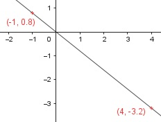

Lineare Funktionen Aufgabe 4 Ergänzen Sie die Wertetabelle für den Graphen der Funktion, und zeichnen Sie den Graphen. y = -0,8x x -1 4 y 0,8 -3,2 x = -1 ---> y = (-0,8) * (-1) = 0,8 x = 4 ---> y = -0,8 * 4 = - 3,2 